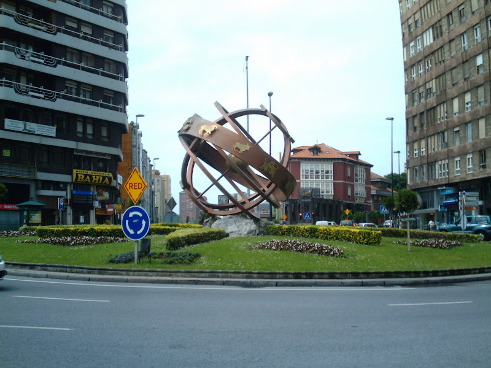
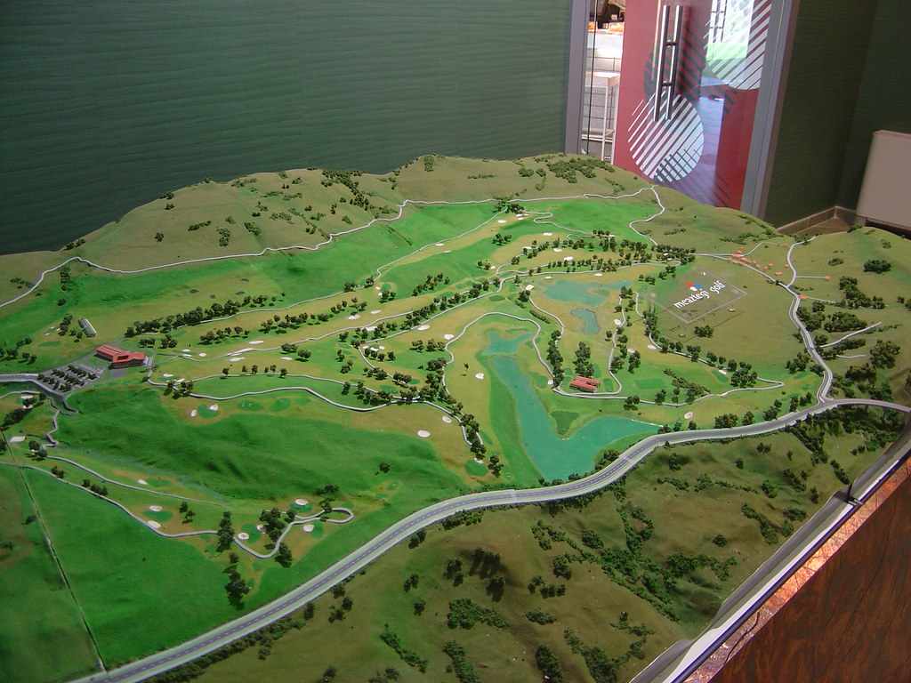

Obras en la rotonda de la Plaza del Castaño
Se han iniciado las obras para la reforma de la rotonda de la Plaza del Castaño. El presupuesto es de 28.000 euros y se estima que los trabajos finalizen al final de febrero.
El alcalde pide paciencia ya que es una zona de mucho tráfico y este tendrá que desviarse por la calle Matasanos.
Se amplía el horario de la Biblioteca Municipal
A partir del lunes, la biblioteca abrirá a las 11 horas y cerrará a las 21 horas, excepto domingos y festivos que permanecerá cerrada.
También se han incorporado 12 nuevos libros y una mesa más en el espacio que sobraba.
Se recuerda que no se deben traer alimentos al edificio y menos aún sardinas asadas. Un poquito de por favor...
Se presenta el proyecto para un campo de golf
El concejal de deportes y unos señores muy majos que estaban sonriendo de oreja a oreja, presentan el proyecto para el campo de golf del municipio.
Aunque la polémica ha perseguido a esta idea desde que se aprobó por 6 votos a 5 hace tres años, la insistencia del concejal ha tenido éxito.
El concejal recuerda que demandará a quién vuelva a acusarlo de recibir una comisión de escándalo por vender los terrenos para el campo por 13.033 euros.